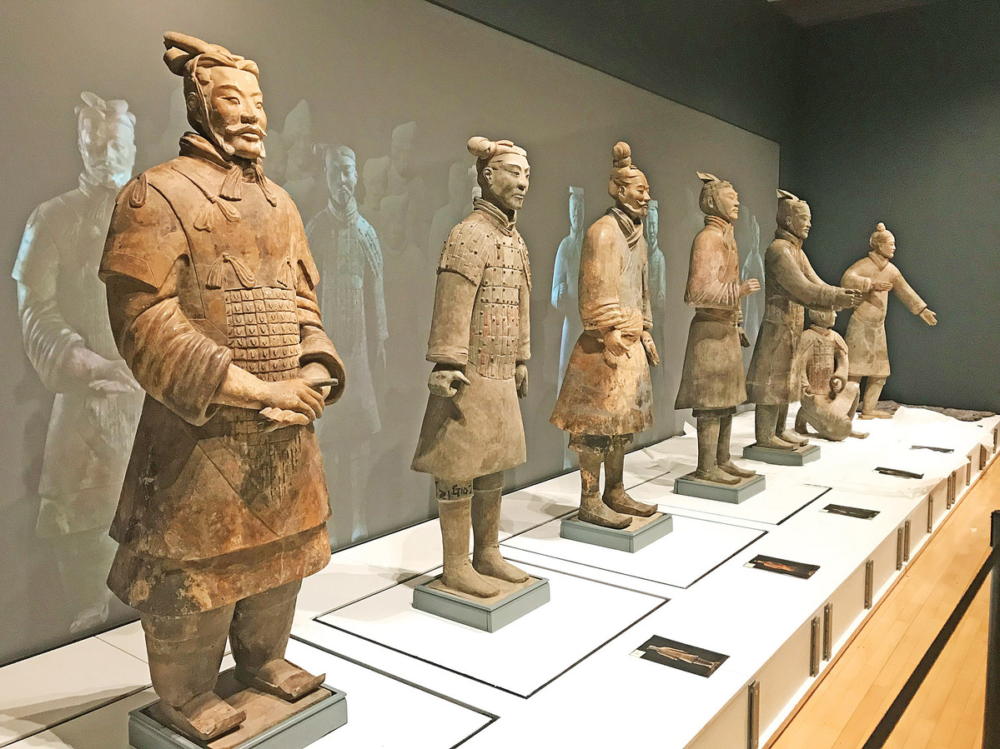
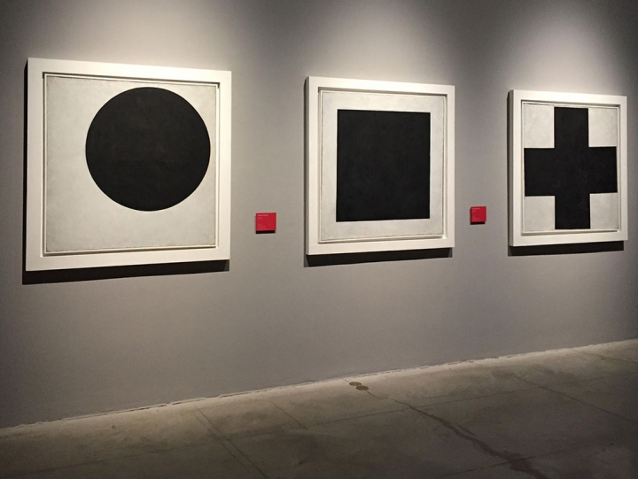
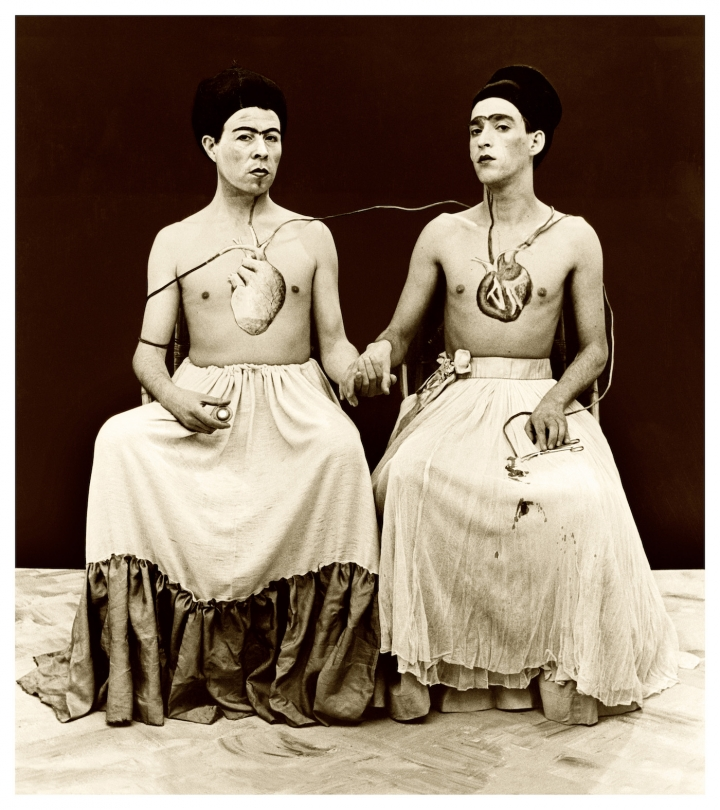
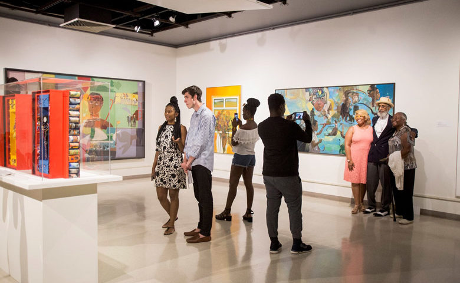

Rosetta Stone
The Rosetta Stone is a granodiorite stele, found in 1799, inscribed with three versions of a decree issued at Memphis, Egypt in 196 BC during the Ptolemaic dynasty on behalf of King Ptolemy V.
Present location: British Museum,London(no exhibition plan)

Sancai
Tang dynasty tomb figure, sancai horse, 7-8th century, also using blue, as on the saddle. Sancai is a versatile type of decoration on Chinese pottery using glazes or slip
Prensent location: British Museum,London(no exhibition plan)

Terracotta Army
The Terracotta Army is a collection of terracotta sculptures depicting the armies of Qin Shi Huang, the first Emperor of China.
Present location: The Franklin Institute,Philadelphia(September 30, 2017–March 4, 2018)

Russian Revolution
The British Library’s latest exhibition Russian Revolution: Hope, Tragedy, Myths shines new light on the unprecedented and world-changing events of the period, focusing on the experiences of ordinary Russians living through extraordinary times.
Present location: The British Library,London(28 April 2017)

Verboámerica
The Latin American Art Museum of Buenos Aires has reorganized its permanent collection, assigning a new context for 20th-century Latin American art and its movements.
Present location: Latin American Art Museum of Buenos Aires,Argentina(April 4, 2017)
